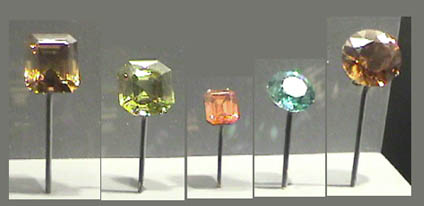

Zircon
Zircon is zirconium silicate, ZrSiO4. The sample above left is from Seiland Is., Norway. The sample above right is about 4x7 cm and is from Northern Territory, Australia. All these samples are displayed in the Smithsonian Museum of Natural History.
Zircon has the distinction of being one of the few substances with a refractive index higher than diamond.
The zircon gem is 75.8 carats and is from Burma. The zircon sample above right is about 9x7 cm and is from Alta, Finnmark, Norway.

The collection above illustrates some of the variety of colors available from zircon gems. The two gems at left are 118 and 97.6 carats and are from Sri Lanka. The three at right are 49.2, 28.1 and 106.1 carats.
The zircon sample above left is about 1x8 cm and is from Fine, New York. The sample at right is about 2.5x2.5 cm and is from Veshnovogorsk, Chelyabinsk Oblast, Urals, Russia.
The zircon gems at left are 23.4 and 48.3 carats and are from Sri Lanka. The gem at right is 103.2 carats and is from Thailand.
|